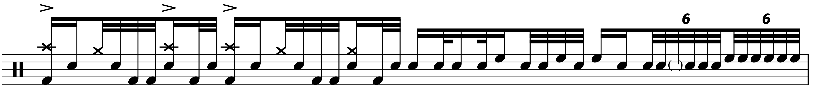

Transcription: “In Color” — Patrick Hallahan with My Morning Jacket
Posted on December 19, 2021

I don’t give myself lot of opportunities to talk about music that’s hip and contemporary. For one, it takes time to evaluate whether or not a piece of music is really worth dissecting. I am also reminded of a scene from the TV show Bosch where the titular character has a conversation with his friend where his comrade says something to the extent of, “Why don't you listen to music from this century?”, to which Bosch replies, “Because I'm still getting caught up on the last one!”. Something like that anyway.
I also realize that I haven’t done a good chunk of transcribing since September, and I would like to end the year on something a little ambitious.
So then, let’s talk some more about the album My Morning Jacket released a couple of months ago. In my last post about My Morning Jacket I wrote that this album probably has drummer Patrick Hallahan’s best performance with MMJ. The tune here is called “In Color”, which is a standout for Patrick across the entire MMJ discography.
The song is a rather sensual blues number, but instead of dissecting any sort of seductive drumming, I want to look at Patrick’s playing during a big jam/guitar solo that happens in the middle of the song. His drumming has a very good build to it throughout this section; each measure ends with increasingly intense fills à la “Hey Joe” (I know “Hey Joe” isn't the only example of this, but pretty much every drummer has heard it).
I think the following measure provides a good synopsis. It has a taste of a lot of the moves Patrick uses on this tune — some funky playing between the kick, snare, and cymbal; some disorienting rhythms; and some fast singles:
By this point in the solo Patrick begins to use same motifs over and over, especially the rhythm right after beat seven on the excerpt above.
It's kind of a weird looking pattern, but as long as you maintain an 8th note pulse, you shouldn't have trouble navigating it. Consider how you would read these two examples:
It’s just that easy!
Edit: Well, actually, I decided to tweak the engraving on that rhythm. I’ve updated the PDF, but I don’t have the energy to make new screenshots.
Last time, I mused about my confusion regarding how many toms were used in the studio for this LP. I know I've seen MMJ use as many as four toms in concert, but I swear I can only hear two on this album. He might be using four, but that's kind of the problem with using more than two toms — most people will just hear “high” and “low”, unless you’re rolling down the drums like Neil Peart. So that’s what I have notated.
That’s all for now; I’ll be taking next week off for the holiday. See you next year!
“In Color” on Songwhip.
Tags: 2021 • Transcription • Patrick Hallahan • My Morning Jacket